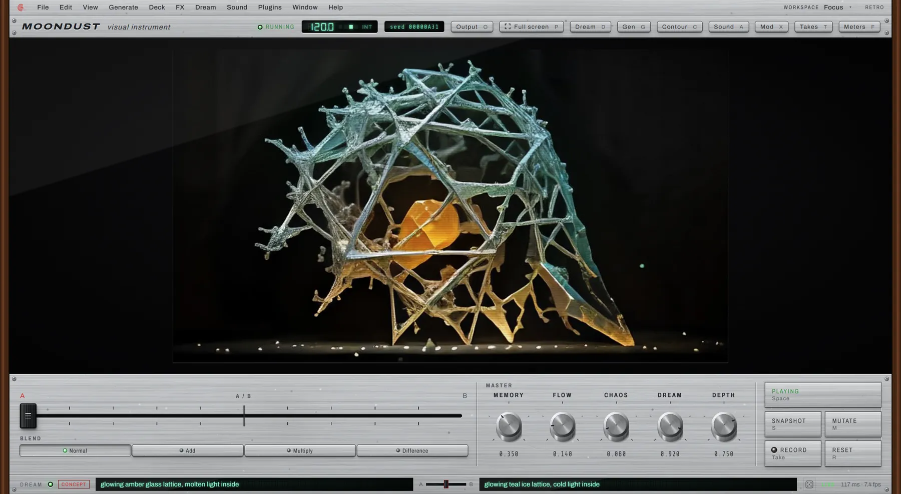
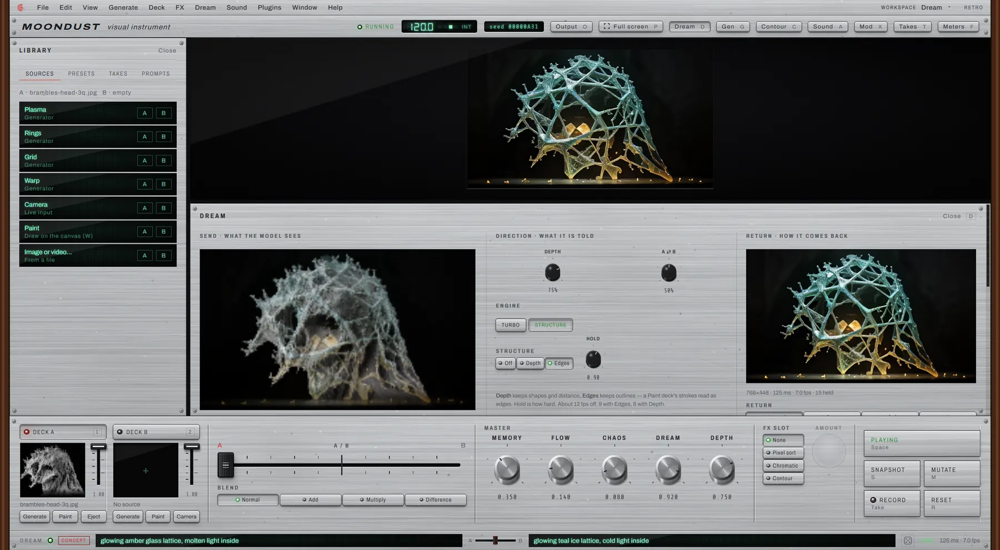
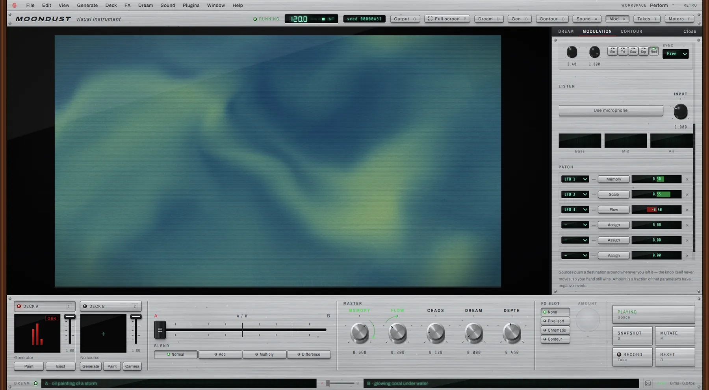
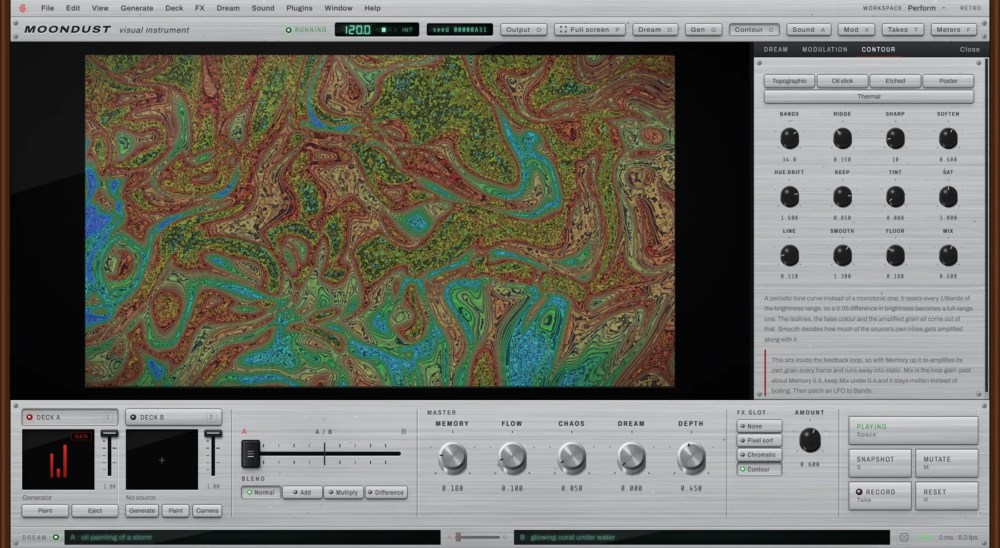
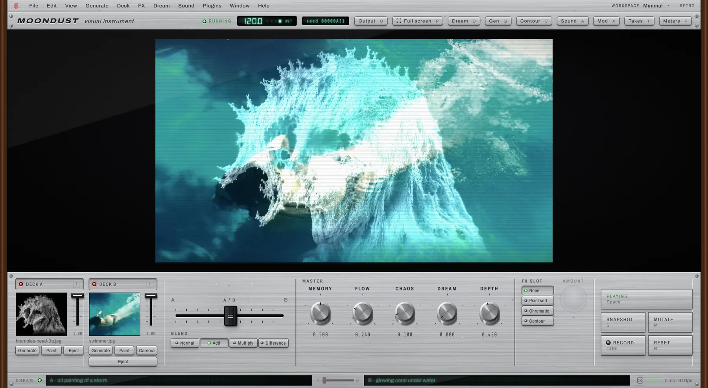

Moondust visual instrument
Stop generating images. Start playing them.
Load a photo, a video or your own camera onto the canvas. Turn a few knobs, and the picture stays alive — drifting, breathing, and quietly dreamed by a real-time AI. Forever unfinished, on purpose.
The idea
There is no Generate button. Press play — the picture is already alive.
Moondust is a desktop visual instrument: to image-making what a synthesizer is to music. A master canvas evolves continuously, and you steer where it goes with a small set of expressive knobs — instead of typing a prompt and waiting for a result, you play one picture forever.
Play it
Four knobs. Infinite pictures.
Drop an image or a video onto the canvas, or turn on your camera. There's nothing to render and nothing to wait for — the picture is already moving, and a handful of knobs decide where it goes next.
- MemoryHow much of the last moment stays behind, so the picture trails itself into ghosts and slow tunnels.
- FlowA gentle current that pulls everything into liquid motion.
- ChaosA small, constant pulse of randomness, so it keeps breathing even when your hands are off the knobs.
- DreamHow much of what the AI imagines comes through.
The Dream layer
A real-time AI, quietly dreaming on top of it.
Underneath the canvas sits a live AI that watches what you're playing and repaints it, frame after frame, guided by a few plain words. Turn Dream up gently and a picture starts to hallucinate at the edges; turn it further and it rewrites itself completely — and it never stops, never waits, and never asks you to click Generate again.

Two ideas, one fader
Sweep between two dreams.
Give the AI two ideas and slide between them the way you'd cross-fade two records — amber glass to teal ice and back, while the shape underneath stays exactly where it is. Moondust can keep the layout of what you show it and let the AI repaint only the surface.

Watch it think
See what it sees, and what comes back.
The Dream panel shows both sides of the conversation: the picture the AI is handed, and the one it sends back. Raise Memory alongside it and the AI starts dreaming on its own output — feeding its own imagination back into itself. That loop is the whole point.

Make it move
It plays itself.
You have two hands and a lot of parameters. Patch a few slow, wandering waves onto any knob, or let the microphone listen to the room, and the picture keeps moving on its own — swelling with a kick drum, drifting on a breath, never quite settling.

Built in
Sculpt the light.
Contour is one of Moondust's own effects — it turns any picture into topographic bands of false colour, like watching a photograph become a thermal map, a poster, an oil slick or a piece of etched metal, all live, all still playable.

Mix
Two hands, two decks.
Load two images, two videos, or a second camera, and cross-fade between them the way a DJ mixes two records — except the record never ends, and the blend itself is just another knob to play.
What's next
Where Moondust is headed
This is a first look, not a finished instrument. Here's what's already sketched out for the releases after this one.
Scenes you can return to
Save a favourite moment, step back into it later, or morph slowly between two of them.
A style of your own
Drop in a reference image and let its texture guide the dream, instead of describing it in words.
A calmer, quicker dream
The AI layer keeps getting faster and steadier, so it can keep up with your hands.
A picture that plays music
Moondust can already turn the canvas into notes. Next: steadier, more musical scores, and an AI player that jams along.
Re-dream in high quality
Record a performance, then let the AI repaint it slowly, offline, at a quality it can't reach live.
Beyond Windows
Moondust starts on Windows. Mac and Linux are on the wish list.
Wishlist
Be the first to press play.
Moondust hasn't shipped yet. Leave your email and I'll let you know the moment the first build is ready to install.
Join the wishlistNo spam — just one email, when it's ready.